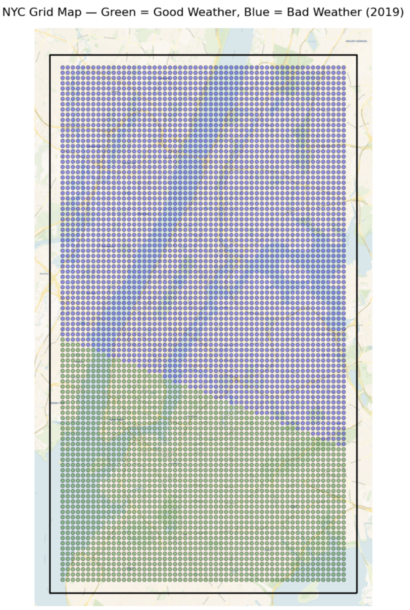

CS7641 Project
Team Members
- Amith Tallanki
- Areeb Khalfay
- Ryan Bowers
- Sanaz Ahmadzadeh
- Shannon Zhang
1. Project Introduction
Bike-sharing systems have emerged as a promising solution for urban mobility challenges, particularly in congested cities. Studies have shown that successful bike-sharing implementations can significantly impact urban transportation patterns. The Capital Bikeshare system in Washington, D.C., for example, led to a 4% reduction in traffic congestion in dense areas [1]. However, the success of these systems heavily depends on careful planning and accurate demand prediction. Research has demonstrated that weather conditions, temporal patterns, and urban infrastructure significantly influence bike-sharing usage. Studies of New York's Citi Bike system revealed that precipitation, temperature, and humidity are crucial factors affecting ridership patterns [2], [3]. Additionally, research has shown that the presence of dedicated cycling infrastructure, such as protected bike lanes, correlates strongly with increased ridership [4].
The use of bicycles in urban areas across the United States is also influenced by a complex interplay of socioeconomic, demographic, and cultural factors. Income level and race play significant roles in determining access to and engagement with bike-sharing programs. Despite high levels of interest among people of color (POC), actual membership and usage rates lag behind those of higher-income white individuals, largely due to barriers such as cost and lack of accessible, relevant information. Interestingly, attitudes toward cycling and social networks—such as friends and family who bike—strongly predict engagement among POC, especially for recreational use, suggesting that targeted outreach and inclusive messaging could help bridge this gap [5]. Age also significantly affects cycling trends. While individuals aged 18–34 are more likely to cycle for commuting or leisure, physical limitations and safety concerns contribute to a marked decline in cycling among older adults, particularly those over 60 [6]. Yet, data from 2001 to 2009 show that individuals aged 40–64 saw the most substantial growth in cycling, highlighting evolving age-related patterns and possibly the impact of health and fitness awareness in that demographic [7].
Gender disparities are also evident, with men accounting for nearly all of the growth in U.S. cycling between 2001 and 2009, “while women's participation remained stagnant and children's cycling sharply declined” [7]. This gender gap is further compounded by broader socioeconomic factors. Unlike Northern European countries where cycling is more gender-balanced, North America has seen disproportionately higher growth in male cyclists, especially for utilitarian purposes, which correlates with broader trends in transportation accessibility and cultural norms [7]. Car ownership and income are additional variables that shape cycling behavior; Studies show that in the early 2000s, “income did not appear to significantly influence cycling rates in the U.S., with bike usage relatively consistent across all income levels. Over time, however, subtle patterns began to emerge suggesting that lower-income individuals may rely more on bicycles for utilitarian purposes such as commuting to work or fulfilling daily needs, whereas higher-income individuals are more likely to use bikes for recreational or fitness-related activities” [7], [8], [9], [10].
This shift points to a growing differentiation in how various income groups engage with cycling, driven in part by their transportation needs and access to alternatives. “Car ownership has increasingly become a key factor in determining cycling behavior. Households without cars—or with limited access to vehicles—are significantly more likely to use bicycles compared to households with multiple cars”. This pattern reflects a practical reliance on bicycles in the absence of motor vehicles and is supported by research indicating a strong inverse relationship between car ownership and cycling rates [7], [11], [12], [13].
Additionally, “while non-Hispanic whites still account for the majority of bike trips in the U.S., cycling is growing more rapidly among African Americans, Hispanics, and Asian Americans”. This shift suggests an increasing diversification of cycling demographics, although white cyclists still dominate overall participation rates [7], [14]. Education also plays a pivotal role in shaping bicycle use patterns. Individuals with higher education levels are more likely to cycle for transportation, possibly due to proximity to universities or workplaces within biking distance, while those with lower education levels are more inclined to use bikes for recreational purposes [15]. Thus, understanding the nuanced impact of these overlapping factors is crucial for developing equitable and effective cycling infrastructure and policy. The challenge of predicting demand in cities without established bike-sharing systems has been addressed through various methodological approaches.
Machine learning techniques, particularly those incorporating users' composition, and spatial and temporal travel patterns have shown promise in predicting bike-sharing demand [16]. These models can potentially help cities like Atlanta understand likely usage patterns before significant infrastructure investment. Also, one motivational point for considering this project is that Atlanta’s transformation into a more bike-friendly city is gaining momentum, earning it the nickname “Atlamsterdam”. With 85% of the 22-mile Beltline loop either open or under construction, and projects like Silver Comet Connector progressing rapidly, the city is enhancing its cycling infrastructure significantly (see Figure 1).
These developments not only promote healthier lifestyles and reduce traffic congestion but also connect diverse neighborhoods, fostering a more inclusive urban environment. Implementing dedicated bike lanes is a crucial step toward realizing this vision, making Atlanta safer and more accessible for all residents.1 According to all the points discussed above, our project investigates whether we can use bike activity trends from other cities – specifically NYC- to predict bike activity in localized areas around Atlanta.

Figure 1: (Left)The Beltline's Eastside Trail in autumn. [Ref] Urbanize Atlanta, , (Right) All phases of the Silver Comet Connector project (solid lines) are either finished or under construction today and scheduled to open next year.
2. Project Overview Video
3. Dataset Description & Dataset Links
We will use the following datasets for our project:
Citibike NYC Trip (2013-2023)
Decade of NYC bike trips showing pre/post-COVID mobility patterns.
NYC Demographics
Neighborhood statistics revealing population characteristics.
NYC Bike Lanes
Geospatial mapping of NYC cycling infrastructure across five boroughs.
Citibike Stations + Google Maps
Station locations with contextual data on nearby businesses and amenities.
Atlanta Risk Factors
Graph information for generating potential Atlanta bike rides, lanes, and stations.
Atlanta Demographics
Census tract statistics for Atlanta demographics information.
4. Problem Definition & Motivation
Atlanta faces severe traffic congestion despite lower population density than other major cities. While places like New York and Chicago rely on public transit, Atlanta remains car-dependent, with MARTA expansion efforts stalled. Bicycling could offer an alternative to car commuting, but the city faces a circular problem: low ridership discourages infrastructure investment, while limited infrastructure deters potential cyclists. This creates uncertainty about the benefits of expanding bike infrastructure. To address this, we developed a supervised learning model that predicts potential bike ridership patterns in Atlanta using data from New York City (NYC), which has robust bike infrastructure and strong bike activity. We train three supervised learning models (neural network, linear regression, and decision tree). This analysis aims to provide urban planners with quantitative insights for creating a more bike-friendly Atlanta. Also, we tried to apply an SVM model to classify the weather data into good weather and bad weather, however, we encountered several challenges and obstacles. Therefore, although we tried different data engineering and approaches, due to the problems in our weather dataset, we could not use the SVM model in the deployment to Atlanta. The details of all of these processes will be discussed in the following sections in more detail.
5. Methods
Figure 2 provides a summary of the methodologies employed throughout this project, including the key analytical techniques, data processing steps, and modeling approaches that guided our work.
Figure 2: Workflow from data collection to implementation of models
5.1. Writing a Pseudocode as a Roadmap
To guide our project systematically, we initially developed a detailed pseudocode framework that served as a structured roadmap (first version). As the project progressed and new challenges and insights emerged, we adapted and refined the original pseudocode to better reflect the actual implementation and decisions made during development. Both the initial version and the updated, final version of the pseudocode are included in the Appendix for reference, illustrating the evolution of our approach throughout the project.
5.2. Collecting Data
The required data for this project was exported from different resources and the description of each dataset has been presented in Table 1 below.
| Data | Purpose | Data Description | Resources |
|---|---|---|---|
| Census Data | Features (X) | The official 2020 US census and the 2020 American Community Survey includes hundreds of demographics features reported for each census tract in the US. Informed by literature on which demographics features are most relevant to bike ridership, we selected a curated dataset that included population, population density, age distribution, gender split, income distribution, education level, vehicle ownership, and household makeup (married couple, family, solo, etc.). For model training, we used all census tracts in the four counties that comprise New York City (New York, Kings, Queens, and Bronx counties, with Staten Island excluded as it does not contain Citi Bike stations). Model deployment used all census tracts in Fulton County within the bounds latitude [33.70, 33.83] and longitude [-84.44, -84.32]. | https://data.census.gov/ |
| NYC Citi Bike Data (2019) | Targets (y) | Target labels came from the NYC Citibike system data. The dataset includes metadata (Ride ID, Ride type, Started at, Ended at, Start station name, Start station ID, End station name, End station ID, Start latitude, Start longitude, End latitude, End Longitude, Member or casual ride) for every Citibike ride in a particular year. We selected the 2019 data, as 2020 biking trends were significantly disrupted by the COVID-19 pandemic, and NYC’s demographic change from 2019 to 2020 is estimated to be negligible. |
https://CitiBikenyc.com/system-data https://s3.amazonaws.com/tripdata/index.html |
| US Census Data - ATL | Same features as the NYC census features | ||
| Lat long Information | Supporting data | Taking into consideration available Citi Bike station data | https://www.latlong.net/ |
| Weather Data | For the SVM Model | Weather data for New York was exported for 3 different stations including Manhattan Wall Street, New Your City, and New Your LaGuardia stations from 2015 to 2025. This dataset includes different features such as Air temperature(F), Dew point(F), Relative humidity (%), Wind direction, Wind speed, 1 hour precipitation (inch), wind gust (mph), Ice accretion 6 hours, snow depth (inch). The dataset includes Latitude + Longitude for data. | https://mesonet.agron.iastate.edu/request/download.phtml?network=NY_ASOS |
Table 1: Collected data to create the final dataset from different resources.
5.3. Data Preprocessing Methods

Figure 3: Data pre-processing method
We implemented a comprehensive data preprocessing pipeline on the NYC census and Citibike datasets to ensure data quality and consistency before model training. To guide this effort, we designed a detailed preprocessing roadmap that outlined each step in the workflow, clearly defining the inputs, transformations, and expected outputs. This roadmap not only helped maintain systematic consistency across the pipeline but also facilitated easier debugging and documentation. The preprocessing steps related to demographic data (Sections 5.3.1 to 5.3.5 and 5.3.7) and grid generation (Section 5.3.6) were applied uniformly to both NYC and Atlanta to maintain comparability across cities. However, the procedures related to bike activity data (Sections 5.3.8 through 5.3.10) were specific to NYC, as Atlanta does not currently have available bike ride data. This lack of data reinforces the value of our predictive modeling effort, which aims to estimate bike demand in Atlanta based on transferable patterns learned from NYC data.
5.3.1. New York Census Data
We began by collecting and integrating data from multiple resources, carefully consolidating all the required information from various databases into a unified dataset that would serve as our foundation for analysis. We exported New York Census Data features from the official 2020 US Census and the 2020 American Community Survey. The output of this step was a .csv file [nyc_data_numeric.csv].
5.3.2. Feature Normalization and Missing Value Imputation Strategy
We then normalized each feature in [nyc_data_numeric.csv] via z-score normalization (standardization), which transforms data to have a mean of 0 and a standard deviation of 1.
Where:
- μ= mean of the feature
- σ= standard deviation of the feature [ref: https://www.geeksforgeeks.org/ml-feature-scaling-part-2/ https://scikit-learn.org/stable/modules/preprocessing.html]
This facilitates different scales between variables and improves model training convergence. We chose Z-score normalization because it is (1) less sensitive to outliers than min-max scaling, and (2) conducive to the interpretability, training stability, and model performance of some algorithms (e.g., linear regression, Principal Component Analysis). Applying z-score standardization to [nyc_data_numeric.csv] yields [nyc_data_normalized.csv]
Handling Non-Normal Feature Distributions
For features that do not follow a normal distribution after standard z-score normalization, we consider alternative approaches such as centroid-based scaling. This method can enhance the robustness of models like linear regression and neural networks by reducing the influence of outliers. However, it may also compromise accuracy in some scenarios. An alternative to z-score normalization, winsorization, was also considered to mitigate the impact of extreme values while preserving the overall distribution structure. Given the typically small differences between these normalization methods in real-world datasets, we do not expect a significant impact on downstream modeling outcomes.
Handling Census Parcels with Missing Features
Census parcels with missing values were imputed using one of two methods:
-
In cases where neighboring parcels could be reliably determined—typically along the East–West axis of Manhattan, where the urban layout is more elongated in the North–South direction—we apply one of the following imputation methods:
- Averaging of Adjacent Parcels: The missing value is replaced with the average of two geographically adjacent parcels.
- Direct Substitution: The raw value from the nearest parcel is used as the replacement.
- Decay-Weighted Substitution: A decay factor is applied (e.g., 80% of the raw value from the nearest parcel) to better represent attenuation or diffusion of the measured phenomenon.
- Directional Rule-Based Substitution: A spatial heuristic is applied—if the parcel is located on the East side of Manhattan, the full raw value is used for substitution; if on the West side, only 70% of the raw value is applied.
-
If no reasonable estimate of a nearby parcel could be determined—such as when neighboring GeoIDs (e.g., ±1) did not yield meaningful spatial relationships—the affected parcel will be excluded from further analysis. This can be done under the assumption that such locations are likely to have negligible population or cycling activity, and their exclusion would not adversely impact model performance.
5.3.3. Pandas Portfolio Report
After normalization, we created a portfolio for the [nyc_data_normalized.csv] dataset, as it serves as our primary database. This portfolio presents summary information (max, min, mean, missing data, etc.) for the dataset and visualizations of variable distributions. The portfolio can be found here:Pandas Portfolio Report. The final portfolio, which is hosted as an HTML link, could not be added to our GitHub repository due to its file size (114 MB), which exceeds GitHub’s upload limit for individual files. Therefore, the following visualizations present some of the most important results.
Figure 4: Overview of [nyc_data_normalized.csv] dataset on Pandas Portfolio Report
Figure 5: Summary information per variable
Figure 6: Relationship between different variables on the dataset
Figure 7: Correlations between variables in the dataset
The correlation plots in Figure 7 provide a comprehensive overview of the relationships between the variables in the dataset using Pearson’s correlation coefficient. Each square represents the degree of correlation between two variables, with the color intensity indicating the strength and direction of that relationship (dark blue for strong positive correlation, dark red for strong negative correlation). Running diagonally from the top-left to the bottom-right is a dark blue line—this is expected, as each variable is perfectly correlated with itself. More interesting are the blocks or clusters of blue and red patterns off the diagonal, which highlight groups of variables that tend to move together, either positively or negatively.
5.3.4. PCA; Principle Component Analysis
Next, we ran principal component analysis (PCA) for dimensionality reduction, reducing the 91 features in [nyc_data_normalized.csv] to the 29-component [nyc_pca_reduced dataset.csv]. This reduction captured 95% of the dataset’s variance.
5.3.5. Pycaret Library
As part of our modeling workflow, we utilized the PyCaret library [ref: https://pycaret.org/] to analyze the [nyc_data_normalized.csv] dataset and identify suitable machine learning algorithms for implementation. Although the results generated by PyCaret were reasonable and aligned with the algorithms we had already considered, including linear regression, Decision Tree, and SVM (see Figure 8), it does not include neural networks. Probably an update is needed for the Pycaret library.
Figure 8: Models recommended by PyCaret for the NYC dataset.
5.3.6. Discretization of NYC into a uniform grid; Spatial Analysis
For model implementation, we evaluated multiple approaches to do the spatial analysis of New York City in order to transit the patterns embedded in New York census parcels to Atlanta. City layouts and grid systems are fundamental to urban planning as they provide a framework for organizing buildings, infrastructure, and public spaces. To facilitate the cross-application of our analytical framework, we conducted an assessment to determine the optimal and implementable approach for New York City's urban topology that would ensure the transferability of the developed model within the Atlanta area. We selected the model based on our available resources and time. To effectively grid New York for your bike infrastructure mapping project, we combined two approaches based on existing research that would facilitate spatial analysis and transferability to Atlanta.
- Census Block or Tract Level Analysis: Many researchers use census blocks or tracts as their spatial unit of analysis for urban infrastructure studies. These boundaries are standardized and allow for demographic integration [17], [18].
Grid Cell Approach: Using uniform grid cells (e.g., 250 x 250ft or 500 x 500ft— a range adoptable according to the 15-minute walkability score) provides consistent spatial units that aren't influenced by administrative boundaries [17]. This approach is particularly useful for transferability between cities. Since the commissioners' Plan of 1811 established the iconic Manhattan grid [20], Orthogonal grids in which perpendicular streets form rectangular blocks were selected as one of the grid pattern types. The advantages of this method are efficient land use and easy parcel division, simplified infrastructure planning and maintenance, and flexibility for future urban development and expansion.
The primary objective of this step was to utilize the [NYC-2019 Citi Bike data] to incorporate landmark-based features into spatial grid locations, enabling the computation of total ride counts within each grid cell. With the census features normalized and reduced using PCA, we next converted the dataset from census tracts (which could vary in size and shape) to a uniform grid of square spatial units. This allowed greater granularity of analysis (each census tract is converted to multiple grid squares) and simplified the process of determining which spatial unit each bike ride fell into. It also facilitated comparison between cities, as different cities may have different census tract sizes.
We selected grid bounds as given in Table 2:
Landmark Latitude Longitude Direction Van Cortlandt park 40.900108 -73.879318 North Use Latitude Lincoln Park 42.250061 -83.179039 West Use Longitude Bay Ridge Avenue 40.626749 -74.018267 South Use latitude Queens Museum 40.74612 -73.845418 East Use Longitude Table 2: Latitude-longitude bounds for the New York City Grid Generation [Ref: https://www.latlong.net/]
We defined our grid with 1000x1000ft cells, based on the 15-minute walkability score. Prior literature suggests 500x500-ft cells, but this resulted in approximately 99,000 grid cells which was computationally infeasible given our resources (taking approximately 6-8 hours to generate the basic grid metrics).
Using 1000x1000 ft cells resulted in 5,444 grid cells (see Figure 9). Many of these cells were entirely in water or did not contain Citi Bike stations. This geographic distribution insight presented a methodological challenge: differentiating between grid cells with zero ridership due to lack of usage versus grid cells with zero ridership due to the absence of Citi Bike stations entirely. Including areas without stations would potentially skew the analysis by treating areas without infrastructure as equivalent to areas with infrastructure but no usage. Thus, we refined the geographic boundaries to exclude areas without Citi Bike stations, specifically Staten Island and other regions clearly outside the service area as identified on the Citi Bike station map. In this regard, this optimization approach provided several benefits:
- Reduced computational complexity and processing time
- Maintained adequate spatial resolution for analysis
- Eliminated data skewing from areas without Citi Bike infrastructure
- Simplified subsequent training and modeling processes
- Provided a more focused analysis of areas with actual Citi Bike service
This reduced the dataset down to 377 usable grid cells, which served as the datapoints for model training.
5.3.7. Determine Demographic Features of Each Grid Cell
Next, we determined the census demographics of each grid cell. Squares that fell entirely into one census tract were assumed to have the same demographics features as that census tract. For squares that fell between multiple tracts, we used the census demographics for the tract that contained the majority of the grid square’s area. The output of this step was [nyc_data_cleaned_normalized.csv].
5.3.8. (NYC only) Determine Bike Activity in Each Grid Cell
Next, we developed a Python script to calculate the number of Citibike rides that started or ended in each of the 377 grid cells for the entirety of 2019, using the start and end latitude and longitude bounds for each ride in the Citibike dataset. This resulted in the dataset [grid_data_updated.csv]. We used these results to generate a visual heatmap (Figure 10) showing the distribution of Citibike ride activity in NYC.
Figure 9: Left- 1000*1000 ft grid overlay on NYC Map
Figure 10: Right - Heatmap visualization of Citibike ride activity in NYC
5.3.9. (NYC only) Merge Bike Data with Census Data
Finally, we combined the target values [nyc_grid_bike.csv] and the demographics features [nyc_data_normalized_grids.csv] into a single dataset [merged_nyc_grid_data.csv] for model training. Using the merged dataset, we visualized the relative importances of each feature (how much of the variance in the bike counts were explained by each feature. The results are shown in Figure 11 below. From the analysis, we can see that bike activity is affected primarily by vehicle ownership, income, gender distribution, population, population density, and education level.
Figure 11: Feature importances for the NYC training dataset
5.3.10. (NYC Only) Ride Count Log Transformation
The target variable for prediction was the Citi Bike ride count at each grid cell. The original scale target variable y, the ride count data, is strongly right-skewed and exhibits non-constant. error variance across the range of predicted values, indicating a violation of the homoscedasticity assumption in linear regression. This phenomenon, known as heteroscedasticity, can lead to inefficient parameter estimates and unreliable statistical inference. Moreover, it may hinder the convergence of neural networks by introducing instability in the learning process due to uneven gradient magnitudes. So we applied a logarithmic transformation using the formula log(Ride Count + 1). This helps stabilize variance, reduce the impact of outliers, and approximate a normal distribution, which is a key assumption of linear regression models. To identify the most relevant input variables, feature selection was performed using SelectKBest with F-regression scoring. This univariate statistical method evaluates each feature individually based on its linear correlation with the target, selecting the top 25 features that demonstrated the strongest predictive relationships.
5.4. ML Algorithms Implemented
Finally, we ran the combined NYC training data through three ML models: a neural network, linear regression, and a decision tree. The dataset was then split into 80-20 stratified training and testing subsets, ensuring that the distribution of the target variable remained consistent across both sets.
5.4.1. Supervised Learning Method 1: Neural Network Architecture
We trained a fully-connected feedforward neural network to predict ride counts based on census features. The network consisted of three hidden layers with progressively decreasing sizes (64 → 32 → 16 → 1), followed by ReLU activation functions. Each layer was followed by batch normalization and dropout regularization to prevent overfitting given the dataset’s small size and high variance. The network returned a single continuous value corresponding to the log-transformed ride count for each grid location.
Figure 12: Neural net architecture
We used a custom loss function, which we call weighted mean square error (WMSE), to reduce the model’s tendency to underestimate high outliers (regressing to the mean):
We tuned the network hyperparameters (number of layers, dropout rate, weight decay, learning rate, number of PCA components, loss function, etc.) using a hyperparameter sweep of over 280 separate configurations. Table X lists all hyperparameters tested.
Figure 13: Sample of model training runs with different hyperparameters [image files: (1) nn_sweep_lossfn.png, (2) nn_sweep_pcacomparison.png]
| Number of layers | 2, 3 |
| Dropout rate | 0.3, 0.4, 0.5 |
| Weight decay | 0.001, 0.003, 0.004 |
| Learning rate | 0.0001, 0.00005, 0.0001 |
| Batch size | 32, 64, 48 |
| PCA variance to capture | 95%, 99% |
| Loss function | MSE 2, Weighted MSE 1 |
Table 3: Hyperparameter configurations tested (final selections are in bold)
1 Used by the top model in the ensemble. 2 Used by the second-best model in the ensemble
5.4.2. Supervised Learning Method 2: Linear Regression
We trained a linear regression model to establish a baseline for predicting bike count, using the LinearRegression module from the scikit-learn library. The regression model was defined by the following equation:
Where:
- Β0 is the intercept,
- Βi represents the coefficient corresponding to feature i,
- The summation runs over the top 29 PCA components
The model was built on Ordinary Least Squares (OLS) regression, a classical linear modeling technique that fits a hyperplane through the feature space by minimizing the residual sum of squares between the observed and predicted target values. OLS has a closed-form solution, meaning the optimal coefficients can be computed analytically without iterative optimization, ensuring fast and deterministic results. Initially, we trained the model using the original feature set with OLS loss. The data exhibits a low-to-moderate dimensionality structure, with the number of features representing approximately 1.9% of the number of data points. In such settings, regularization is not strictly necessary; however, we evaluated Ridge and Elastic Net regression to assess model stability under penalization. We observed that the regularized models achieved improved training performance as the hyperparameters (e.g., L1-ratio and alpha) decreased. However, their test set R-squared values remained lower than that of the OLS model. This outcome suggests that in our case, the simpler OLS model may generalize better, and penalization might be unnecessary – especially given that we had already applied z-score normalization and Principal Component Analysis (PCA) to preprocess the features. To further examine model agreement, we computed the Spearman correlation between the predicted y values from the OLS, Ridge, Elastic Net models. All pairwise correlations were close to 1, indicating that the predictions are highly aligned. This suggests limited benefit in ensembling these models.
5.4.3. Supervised Learning Method 3: Decision Tree
Our third supervised learning model was a decision tree regressor, implemented using the scikit-learn DecisionTreeRegressor class. Decision trees provide an interpretable, rule-based model that could capture non-linear relationships between demographic features and bike usage. They are capable of modeling non-linear interactions and hierarchical decision-making patterns without requiring feature scaling. Furthermore, they provide interpretability through their branching logic, which is valuable when attempting to understand how different features contribute to ridership predictions. Given that prior models like linear regression assume linearity and neural networks require substantial tuning, decision trees served as a strong baseline for flexible modeling with minimal assumptions.
Figure 14: Decision Tree Visualization
5.4.4. SVM Model
We aimed to train SVM to classify NYC days as good weather and bad weather and learn a ratio between ride volume in good weather and bad weather. By applying SVM exclusively to the weather data subset, the third model would have been introducing a distinct modeling approach compared to the previously implemented linear regression and neural network models. This methodological diversity not only was supposed to enrich the analysis but also had the potential to uncover unique insights into how weather conditions influence bike usage—insights that could not be captured as effectively by the other models. Although the SVM model was implemented and trained on the NYC weather data, the test answer did not work very well due to several issues in the weather data. Below, we have provided the details to explain why the SVM model did not work on our NYC weather dataset. NYC weather data for 2019 has the longitude and latitude of two stations:
| Station | Longitude | Latitude |
|---|---|---|
| Manhattan (JRB) | lon = -74.009 | lat = 40.7012 |
| New York City (NYC) | lon = -73.9693 | lat = 40.779 |
This dataset has the following features:
- Valid: Time
- Longitude
- Latitude
- Tmpf = Air temperature [F]
- Relh = relative Humidity [%]
- Wind Speed = Wind Speed [mph]
- p01i: One hour precipitation [inch] for the period from the observation time to the time.
- Vsby = visibility [mile]
Figure 15: Structure of NYC weather data
As part of the project, we intended to train a Support Vector Machine (SVM) model to classify NYC days as either good weather or bad weather based on historical weather conditions. The goal was to integrate this classification into our bike demand prediction framework and compute a ratio of ride volume between good and bad weather conditions. However, we encountered a fundamental issue in the structure of the weather dataset that prevented successful application of the SVM. The weather dataset was rich in temporal granularity, offering frequent observations throughout each day. However, it was fundamentally structured as a time-series dataset rather than a location-series dataset. This means that while we had numerous weather observations across different times of day, all data entries were geotagged to only two distinct latitude and longitude coordinates—corresponding to just two weather stations, NYC and Manhattan. As illustrated in the attached image:
- The dataset primarily recorded hourly weather variables (e.g., temperature, humidity, wind speed) from these two stations.
- These observations lacked geographic variety and were concentrated spatially in only two locations.
- Consequently, all data points, regardless of time, belonged to either Station 1 or Station 2.
This spatial limitation introduced a major challenge: we had to assign localized weather data to a city-wide grid despite having only two reference points. In essence, this meant taking all the weather observations from these two "baskets" and attempting to extrapolate them across a diverse urban grid that covers the entire NYC area. So, since all the weather datapoints were flattened in two stations, we tried to assign representative weather values to each grid cell:
- For each grid cell, we found the nearest weather station.
- From that station's data, we randomly selected a data point (typically from the same day) to represent the cell's weather condition.
- This point was then assigned to the corresponding grid cell.
Then we defined good weather and bad weather [21], [22], [23] to be able to visualize the weather data across the grid.
def classify_weather(Tmpf, Relh, WindSpeed, p01i, Vsby):
if (60 <= Tmpf <= 85 and
30 <= Relh <= 60 and
WindSpeed <= 15 and
p01i == 0 and
Vsby >= 5):
return "Good Weather"
elif (Tmpf < 40 or Tmpf > 95 or
Relh > 80 or Relh < 20 or
WindSpeed > 25 or
p01i > 0.05 or
Vsby < 2):
return "Bad Weather"
So, after scattering the datapoints across the grid (with randomizing and other techniques), as shown in the Figure 16 below, different observations for each day in a year are quite obvious.
Figure 16: Daily good and bad weather for two stations in 2019
But two other visualizations show why the weather data have not distributed correctly (due the problem that randomizing causes).

Figure 17: Visualization of bad weather and good weather for 5 grids besides each other in year 2019 – weather condition in day 1 of year 2019 in 5 grid cell close to each other should be the same, but as shown in the diagram above this has not been happened.
Despite our efforts to integrate weather conditions into our analysis by randomly distributing weather data across NYC grid cells, this approach introduced several fundamental limitations that ultimately led to a geographically unrealistic and homogeneous classification of weather conditions—specifically, the distinction between “good” and “bad” weather. These issues stem from both the structure of the weather dataset and the methods required to compensate for its limitations. The weather dataset was sourced from only two fixed-location stations in NYC, providing a rich set of time-series observations (i.e., multiple measurements throughout each day), but no location-series variation (i.e., diverse geographic coverage across the city). Consequently, all weather entries were tied to just two latitude-longitude coordinates. To adapt this data for our grid-based urban modeling, we randomly assigned weather observations to each of the 5,544 grid cells that compose our study area. However, this random spatial assignment introduced four major issues:
Loss of geographic context: Since each weather data point was not originally tied to a specific geographic area, we could not determine where it truly belonged within the city. Assigning such data randomly to a grid cell means there's a high risk of misplacing weather conditions—for example, associating a rainstorm observation with a sunny region. This can distort the perceived correlation between weather conditions and bike ride volumes in those regions.
Inconsistency across adjacent grids: In reality, weather conditions are generally continuous over short distances—especially within a dense urban environment. Given that each of our grid cells measures just 1,000 x 1,000 feet, it's unreasonable for two adjacent cells to be classified under opposite weather conditions (e.g., one as “good” and one as “bad”) on the same day. However, our random assignment process made such contradictions not only possible but statistically likely, thereby reducing the geographic credibility of our model’s weather layer.
Overextension of limited data: On any given day, the dataset included only 193 unique weather records, all from two stations. Yet, we needed to populate 5,544 grid cells. To bridge this gap, we had to replicate and assign the same limited weather data across a much larger spatial framework. This naturally led to a homogeneous distribution of weather values across the city, where many grid cells shared identical or nearly identical data, undermining the richness and variability required for nuanced spatial analysis.
Negative impact on predictive modeling: One of our key modeling goals was to calculate and compare ride volumes in good versus bad weather conditions. However, due to the random and potentially inconsistent distribution of weather classifications, the model’s foundational assumptions were compromised. This could lead to inaccurate ratio calculations and undermine the reliability of predictions. In essence, the model might misattribute a drop in ride volume to bad weather in a certain region when the actual cause could be unrelated, simply because weather data was poorly aligned spatially.
Therefore, while we attempted to spatially align weather data with our grid-based framework, the lack of geographic diversity in the source data and the necessity of random assignment led to inconsistencies that introduced noise and undermined the predictive value of weather-based features. This experience highlights the critical importance of spatially granular data when modeling urban phenomena that are sensitive to local environmental conditions.
Figure 18: Good weather and bad weather patterns in NYC – 2019
Figure 19: SHAP value for feature impact on model - ['Ride Count', 'tmpf', 'relh', 'p01i', 'vsby', 'hour']
To better understand how individual weather variables influence our model’s predictions of bike ride volumes, we performed a SHAP (SHapley Additive exPlanations) analysis. SHAP values quantify the contribution of each feature to a model's output for every prediction, providing insight into which features are driving predictions up or down—and under what conditions. The SHAP summary plot shown here reveals the influence of each weather-related feature on the predicted bike demand across all grid cells and days in our dataset. Each dot represents a single prediction instance, with the color indicating the actual feature value (blue = low, red = high), and its position on the X-axis representing the SHAP value (i.e., how much that feature increased or decreased the model’s predicted ridership for that instance). Among all features, Feature 1 emerges as the most consistently influential. High values of this feature (seen in red) are strongly associated with positive SHAP values, meaning they significantly increase predicted bike ride counts. This pattern is characteristic of a variable such as temperature, where warmer days tend to encourage cycling. The model appears to learn this relationship clearly and leverages it to adjust predictions accordingly. Feature 3 shows a more muted effect. Most SHAP values for this feature cluster tightly around zero, indicating that the model doesn’t strongly rely on this variable. This could represent relative humidity or cloud cover, factors that might influence comfort levels but do not decisively affect biking behavior in most cases. Similarly, Feature 2 shows minimal impact overall, with both low and high values resulting in weak and scattered effects. This could point to a variable like wind speed or visibility, which likely affect some riders but do not appear to consistently sway the model’s predictions. Feature 6 presents an interesting case. While it contributes less frequently than the others, high values are clearly associated with increased predicted ride volumes. This sporadic but positive impact suggests it may represent a condition such as sunlight hours or an indicator of clear skies—factors that, when present, can significantly boost ridership but are not always present in the data. On the other hand, Features 4 and 5 are associated with negative impacts when their values are low (blue). In these cases, SHAP values dip below zero, indicating a suppression of predicted ridership. These features are likely tied to precipitation-related measures, such as rainfall amount or storm probability. In poor weather conditions, especially rain, cycling activity tends to drop sharply—a trend that the model appears to capture well. Lastly, Feature 0 shows minimal influence across the board. Its SHAP values remain close to zero regardless of whether the feature value is high or low, suggesting that the model largely ignores this variable. This could be due to the feature being relatively constant in the dataset or providing little useful information—possibly something like barometric pressure or dew point, which may not vary meaningfully across urban areas or directly impact riding behavior. All these results show that our dataset is not structured well enough to pass to the model for testing the data. Although the dataset had different problems, the prediction was not too bad.
Figure 20: Actual vs Predicted for Hourly Prediction
6. Results and Discussion
6.1. Model Training Results and Evaluation
Model performance was assessed both on the log-transformed scale (to evaluate direct model outputs) and on the original scale (to understand real-world error magnitudes after back-transforming the predictions).
On the log scale, the following metrics were used:
- R²: Proportion of variance in the target variable explained by the model, indicating goodness of fit.
- Mean Absolute Error (MAE): Average absolute difference between predicted and actual values, measured in log units.
- Mean Squared Error (MSE): Average squared difference between predicted and actual values, also in log units, which penalizes larger errors more heavily.
On the original scale (i.e., after exponentiating predictions to return to raw ride volumes):
- MAE: Interpreted as the average absolute error in predicted ride counts, providing a clear and interpretable metric for practical deployment.
- MSE: Computed to highlight sensitivity to large prediction errors, which can be critical for operational planning or resource allocation.
6.1.1. Neural Network Results
We trained the neural network using the Adam optimizer and the hyperparameters given in Table 4. The loss curves (Figure 21) indicate good model convergence, demonstrating that it captured the relationship between census-derived features and bike ride volume. This validates its suitability for deployment to similar urban contexts such as Atlanta.
| Learning rate | Batch size | Number of epochs |
|---|---|---|
| 0.00005 | 48 | 2400 |
Table 4: Hyperparameters used for neural network training
The training and validation loss (measured in mean squared error) show a noisy but downward trend over the training period, stabilizing to acceptable loss values after approximately 1800 epochs. Similarly, the mean absolute error (MAE) for both training and validation sets decreased steadily and remained closely aligned throughout the training process, indicating that the model generalized well and did not overfit. The small gap between training and validation errors further supports the robustness of the learned model.
Figure 21: Weighted MSE and NN Training R2
Our final neural network model was an ensemble of the top two training runs, achieving a final R2 of 0.71, as seen in Figure 22.
Figure 22: Correlation plot for final neural network ensemble
6.1.2. Linear Regression Results
The linear regression model as the baseline model demonstrated moderate explanatory power on the training data but exhibited limited generalization to unseen samples. Key performance metrics are summarized in Table 5.
| Metric | Training Set | Test Set | Training Set (Originial Scale) | Test Set (Original Scale) |
|---|---|---|---|---|
| R² | 0.57 | 0.38 | ||
| MAE | 1.35 | 1.69 | 4.38e+4 | 3.88e+4 |
| MSE | 3.54 | 6.35 | 7.90e+9 | 6.71e+9 |
| RMSE | 1.88 | 2.52 | 8.89e+4 | 8.19e+4 |
Table 5: Linear Regression performance metrics
To qualitatively assess model fit, we plotted predicted versus actual values. In the training set, predictions clusterd tightly along the 45-degree reference line, indicating a strong fit. In the test set, points were more scattered, but the model still captured the dominant trend. We noted mild underprediction for low actual y values in the training set, which could be attributed to limited representation in that region or the model’s inability to capture complex nonlinear relationships.
Figure 23: Predicted vs. Actual ride volume using Linear Regression
The Linear Regression model explained 57% (R2 = 0.57) of variance in training data, reducing to 38% on test data. Test set predictions showed substantial absolute errors, with squared errors suggesting presence of significant outliers. Logarithmic transformation improved model stability, though back-transformed errors remained substantial in original units. The performance gap of the linear regression between training and test metrics (ΔR2 = 0.2075) suggests the limited capacity of basic linear regression model to capture generalizable patterns and possible need for non-linear modeling approaches.
The performance gap of the linear regression between training and test metrics (ΔR² = 0.2075) suggests the limited capacity of basic linear regression model to capture generalizable patterns and possible need for non-linear modeling approaches.
| Metric | Linear Regression | Neural Network |
|---|---|---|
| R² | 0.415 | 0.100 |
| MAE (Log Scale) | 1.812 | 2.169 |
| MSE (Log Scale) | 6.037 | 9.290 |
| MAE (Original Scale) | 57,415.5 | 131,832.7 |
| MSE (Original Scale) | 14,601,626,645.4 | 62,627,919,119.6 |
Table 6: Model Performance Comparison
Figure 24: Visual comparison of Neural Network performance and Linear Regression performance
6.1.3. Decision Tree Results
We performed a grid search over two hyperparameters:
- max_depth [5, 10, 15]: Controls the maximum depth of the tree and thereby the model’s capacity to capture complexity.
- min_samples_split [2, 5]: Controls the minimum number of samples required to split an internal node, acting as a regularization mechanism.
The best-performing configuration (max_depth = 10, min_samples_split = 2) yielded the following evaluation metrics:
| Metric | Training Set | Test Set |
|---|---|---|
| R2 | 0.9339 | 0.2103 |
| MAE | 0.2570 | 1.9033 |
| MSE | 0.5496 | 8.1498 |
| RMSE | 0.7414 | 2.8548 |
Table 7: Decision Tree training metrics
These results show that while the model fits the training data very well, it failed to generalize to the test data.
Figure 25a:Depth 5 Split 2
Figure 25b:Depth 10 Split 2
Figure 25c:Depth 15 Split 2
6.1.4. Model Comparison
| Metric | Linear Regression | Neural Network | Decision Tree |
|---|---|---|---|
| R2 | 0.38 | 0.731 | 0.21 |
| MAE (Log Scale) | 1.69 | 0.411 | 1.90 |
| WMSE (Log Scale) | N/A | 0.248 | N/A |
| MSE (Log Scale) | 6.35 | N/A | 8.15 |
| MAE (Original Scale) | 3.88e+4 | 8597.16 | 4.43e+4 |
| MSE (Original Scale) | 6.71e+9 | N/A | 6.74e+9 |
| WMSE (Original Scale) | N/A | 3.082e+8 | N/A |
Table 8: Model Performance Comparison – Test Set Metrics
The performance evaluation of three predictive models — Linear Regression, Neural Network, and Decision Tree — reveals that the Neural Network consistently outperforms the other two models across multiple statistical metrics, both on the log-transformed and original data scale.
Starting with the coefficient of determination R2, which reflects the proportion of the variance explained by each model, the Neural Network achieves the highest score at 0.731. This indicates that it explains approximately 73.1% of the variability in the log-transformed target variable. In comparison, Linear Regression scores a moderate 0.38, while the Decision Tree lags behind at 0.21, showing limited explanatory power.
The result of the Neural Network is further supported by its performance on log-scale error metrics. It achieves the lowest Mean Absolute Error (MAE) at 0.41, significantly better than Linear Regression (1.69) and Decision Tree (1.90). The WMSE value of 0.248 in the Neural Network emphasizes the model’s accuracy and balanced treatment of data points with differing importance.
In assessing performance on the original scale of the target variable, the Neural Network continues to lead with an MAE of 8597.16, which is substantially lower than Linear Regression’s error of 3.88e+4. The Neural Network’s WMSE of 3.082e+8 is far lower than Linear Regression’s MSE of 6.71e+9, suggesting that the Neural Network not only achieves better predictive accuracy but also manages prediction variability more effectively.
Therefore, the Neural Network clearly demonstrates the most robust performance among the three models. It excels in capturing the variance of the data, minimizes both absolute and squared errors, and leverages weighted error optimization to enhance its generalization across different data points.
6.2. Model Deployment
6.2.1. Challenges in Generalizing NYC-Trained Models to Atlanta: Demographic, Technical, and Ethical Considerations
As we sought to apply machine learning models trained on New York City (NYC) data to predict bike activity patterns in Atlanta (ATL), we encountered several fundamental challenges that impact the validity, fairness, and generalizability of our approach. These challenges span demographic mismatches, dataset limitations, and ethical implications, all of which must be addressed before interpreting the model’s predictions or using them for policy recommendations.
One of the most striking differences between NYC and ATL lies in population density. As shown in the population density distribution graph, NYC census tracts have a mean density of 58,060 people per square mile, compared to only 5,089 people per square mile in Atlanta—a nearly tenfold difference. This extreme disparity places Atlanta far outside the statistical range of the data used to train our model. In machine learning terms, we are essentially extrapolating into a region of the input space that the model has never seen, which raises serious concerns about model generalizability and reliability.
The model's assumptions, feature importance rankings, and learned patterns are tailored to NYC's urban dynamics, where dense residential and commercial zones foster higher bike usage. Applying this directly to a city like Atlanta—characterized by lower density, more car dependency, and different infrastructure—risks drawing misleading conclusions unless carefully adapted or retrained.
Even within NYC, our model was trained on a relatively small and highly skewed dataset. We had only 377 grid squares containing Citibike stations, and while we selected 90 census features for training, the response variable—bike ride count per grid—was heavily skewed, with most grid squares having low ride counts and a few exhibiting very high usage. This imbalance makes it difficult for the model to learn subtle patterns, particularly those that could transfer well to another city with vastly different usage profiles.
Furthermore, machine learning methods—while powerful for detecting complex relationships—are data-hungry. Learning a nonlinear mapping between demographic variables and bike activity across a small number of spatial samples is prone to overfitting, even before generalizing to another urban context. The risk is that the model memorizes NYC-specific patterns instead of learning generalizable rules.
Figure 26: NYC vs ATL demographic - Generalizing NYC-Trained Models to Atlanta
In addition to technical challenges, there are important ethical dimensions to our modeling approach. Our predictions rely heavily on demographic data, such as income, race, education, and age. Using these features introduces the risk of reinforcing existing biases, particularly if the model associates low bike activity with historically underserved or marginalized communities and fails to recommend infrastructure improvements in those areas.
Moreover, we are training the model on Citibike data—a paid rideshare service—which is known to have skews toward higher-income users. This means our data may underrepresent populations that would benefit from improved bike access but currently lack the means to participate in the system. If unaddressed, this could lead to recommendations that favor already advantaged areas, exacerbating inequality rather than alleviating it.
Bike infrastructure has the potential to be a powerful egalitarian tool, promoting sustainable transport, improving public health, and reducing dependency on cars. However, the predictive modeling process must be critically evaluated to ensure it supports these goals. We must compare our model outputs with additional datasets, perform localized validations, and engage with community stakeholders before any conclusions are drawn or policy decisions are made.
Figure 27: NYC Population Distributions
The violin plots above illustrate the distribution of population characteristics across spatial units within New York City, offering insights into both total population and population density at the local level. The left plot shows the distribution of total population per unit, such as census tracts or grid cells. The shape of the plot reveals that most spatial units in NYC have populations ranging between approximately 2,000 and 6,000 people. The embedded box plot highlights a median value near 4,000, with the majority of data points clustered within a relatively narrow interquartile range.
However, the extended upper tail and presence of several outliers indicate that a few locations are significantly more populated. These likely correspond to areas with dense residential development, such as large apartment complexes or housing projects. Overall, the distribution shows moderate right skewness, suggesting that while most areas have moderate populations, there are a few with exceptionally high counts.
In contrast, the right plot displays the distribution of population density, measured in people per square mile. This distribution is more sharply skewed and exhibits a broader range of values. While a large number of spatial units fall between 30,000 and 100,000 people per square mile, the upper tail stretches dramatically, with some outliers reaching densities above 250,000 per square mile. These extreme values likely reflect hyper-dense urban cores—particularly neighborhoods in Manhattan—where residential, commercial, and transit infrastructures are tightly packed.
The stark contrast between the two distributions underscores a critical aspect of NYC’s urban structure: while many neighborhoods have similar total populations, the land area they occupy varies considerably, leading to highly uneven population densities. This variation has practical implications for urban planning, especially for infrastructure projects such as bike lanes, public transit, and emergency services, which must account not only for how many people live in an area, but how densely they are concentrated.
6.3. Atlanta Preprocessing
We pre-processed Atlanta’s census data using the same methodology described in sections 5.3.1, 5.3.2, 5.3.4, 5.3.6, and 5.3.7. We selected the same 91 features from the US Census and normalized each feature using that feature’s mean and variance from the NYC distribution. Although this normalization method places Atlanta far outside of New York City’s range—especially for population and population density—it is more consistent with the training distribution and better aligns the features with the model’s expectations.
There is an important trade-off to consider: normalizing Atlanta’s data using NYC’s parameters ensures compatibility with our trained model, but it also highlights how extreme some ATL values are when viewed through a NYC-trained lens. Alternatively, normalizing based on Atlanta’s own distribution would make ATL data appear more “standardized” but would effectively deceive the model—making it believe Atlanta is more similar to NYC than it actually is. We opted for NYC-based normalization to maintain methodological integrity, despite the resulting statistical distance.
We also created spatial grid cells for Atlanta using the same gridding methodology applied to New York City. This involved defining bounding coordinates for the Atlanta metro area and dividing the region into uniform rectangular cells. The latitude and longitude bounds used for the Atlanta grid system are shown in the table below:
| Direction | Coordinate |
|---|---|
| North | 33.900000 |
| South | 33.600000 |
| West | -84.550000 |
| East | -84.250000 |
Table 9: Latitude and longitude bounds for the Atlanta grid
These bounds were selected to encompass the primary urban core of Atlanta. Grid cells were created at the same resolution (e.g., 1000 × 1000 meters), allowing us to apply the same feature mapping, ride volume projection, and visualization techniques used in the NYC portion of the analysis.
Figure 28: Grid Discretization for Atlanta
To enable consistent comparison and predictive modeling, we applied a grid-based discretization approach to the city of Atlanta, identical to the method used for New York City. The entire study area was divided into uniform spatial grid cells—each measuring approximately 1,000 × 1,000 feet. For each grid cell, we aggregated and assigned demographic information from the corresponding U.S. Census tracts. This included a wide range of features such as population size, age distribution, income levels, racial composition, education attainment, and housing characteristics. Once the demographic attributes were associated with each grid cell, we passed these features through the machine learning models trained on NYC data. These models, which included Random Forest, Linear Regression, and Neural Networks, had been previously trained to learn relationships between demographic patterns and observed bike ride volumes in NYC. By feeding the Atlanta grid-level demographic data into these pre-trained models, we obtained predicted bike ride counts for each cell across the city.
Figure 29: Deploying the model to Atlanta
6.4. Model Inference
Once the predictive models were trained and validated using the NYC dataset, we moved into the inference phase, where the models were used to generate predictions for unseen data—in this case, Atlanta. Specifically, the grid-level demographic features from Atlanta were passed as input into the trained models (Random Forest, Linear Regression, and Neural Network). Since these models had learned patterns between demographics and bike ride volumes in NYC, they produced corresponding predictions for each Atlanta grid cell, estimating the expected level of bike activity.
This inference step was essential in translating NYC-learned insights into actionable projections for Atlanta, especially in the absence of actual bike usage data. The outputs allowed us to identify potential high-demand zones in Atlanta that may benefit from expanded bike infrastructure, supporting data-driven urban planning and investment decisions.
6.4.1. Heatmap Generation and Interpretation
Figure 30:Heatmap visualization - results for the three models
The heatmaps displayed above illustrate the predicted bike ride demand across Atlanta as generated by three different machine learning models: a Neural Network, Linear Regression, and a Decision Tree. These predictions were derived using grid-level demographic features from Atlanta, passed through models trained on New York City data. While each model shares the same input, their spatial predictions differ significantly in terms of distribution, concentration, and spread of high-demand areas.
The Neural Network model produces a widespread and multi-centered pattern of predicted bike demand. High-activity zones appear in multiple parts of the city, including the southwest, west, and pockets in the north. This indicates the model's ability to capture nonlinear and complex relationships between demographics and predicted bike usage.
Its flexibility allows it to detect nuanced patterns across diverse neighborhoods, potentially identifying both traditionally dense areas and emerging zones of interest. However, this broader spread could also reflect overgeneralization or overfitting, especially given the small size of the training dataset (377 grid cells).
In contrast, the Linear Regression model yields a more concentrated and centralized prediction. The most intense hotspot lies near the Old Fourth Ward and Midtown area, suggesting the model heavily weights variables linearly correlated with dense, high-income, or active zones.
While this outcome is more interpretable and reflects a traditional urban core dynamic, it may miss subtler patterns in lower-density or transitional neighborhoods due to its inability to model nonlinear interactions. The sharpness of the hotspot also indicates potential sensitivity to outliers or skewed features in the demographic input.
The Decision Tree model produces an output somewhere between the previous two in terms of spread. It captures distinct patches of high predicted demand, mostly around major roads and central areas, but lacks the smooth gradation seen in the Neural Network’s map.
Decision Trees work through hierarchical rules and splits, which may explain the more blocky and segmented prediction structure. While this method handles feature interactions better than linear models, it is still prone to overfitting and lacks the generalization capacity of ensemble methods or deep learning.
6.4.2. Recommendations based on Model Results
Figure 31:Recommendations based on model results
The model predictions largely align with our expectations, reinforcing known urban trends in Atlanta. The central corridor extending from Midtown down to the Hotel District emerges as a prominent hotspot, reflecting high predicted bike activity. This result is intuitive given that this corridor is densely populated and home to a predominantly young, urban demographic—a population segment that is typically more likely to cycle, especially for short commutes, recreation, or last-mile transit connections.
Another major area of predicted activity is Buckhead, located in the northern section of the city. This, too, is unsurprising—Buckhead is a dense, well-developed area with a growing number of mixed-use developments and commercial centers. The model identifies it as a high-demand zone, likely due to its demographic characteristics and potential for multimodal commuting.
A third significant cluster appears near Clark Atlanta University, which again matches expectations. This area includes a large concentration of students and young residents, all within a walkable and bikeable urban core. The elevated predicted activity suggests that a student-heavy population correlates strongly with potential cycling uptake—something consistently supported by academic literature and urban transportation studies.
Notable Inconsistencies and Model Limitations
Despite these confirmations, some results from the model deviate from our real-world understanding, raising important questions about model bias and data limitations.
One example is Georgia Tech, which, despite being a large urban campus with a known biking culture, is only predicted to have slightly elevated activity. Given that a significant portion of the student body commutes by bike or uses cycling for campus mobility, this underprediction likely reflects a regression to the mean effect. Grid squares with low total population but strong niche biking behavior may be averaged down by the model, especially under demographic-only predictors.
Another questionable prediction is for Downtown Atlanta. Despite being one of the densest and most central areas of the city, the model forecasts relatively low bike activity. A plausible explanation is that downtown, while dense, is also economically disadvantaged compared to Midtown or Buckhead. Since the model was trained on NYC data—where higher-income areas may show higher ridership due to the Citibike program’s subscription-based model—this could lead to biased predictions against low-income regions in Atlanta.
This is a critical reminder that model output should not be accepted at face value, especially when extrapolating across different socioeconomic contexts.
Infrastructure Recommendations
Using the model’s output as a guide, we manually placed proposed bike lanes, shown in red on the map. These recommendations focus on:
1. Targeting high-demand zones: such as Midtown, Buckhead, and the university district.
2. Improving network connectivity: ensuring that isolated high-demand areas are better linked through continuous infrastructure.
3. Closing infrastructure gaps: especially in underserved but promising regions—areas where model predictions may be conservative due to population or income biases, but where community-level cycling behavior is likely underrepresented in the data.
By combining model-driven insights with local intuition and known patterns of urban behavior, these proposed additions aim to expand access, promote equity, and support increased bike usage citywide.
6.5. Next Steps
6.5.1. Integrating K-Means Clustering for Contextual Feature Engineering
To further improve the accuracy and relevance of our predictive model and infrastructure recommendations, the following steps are proposed:
Future iterations of the model should take into account origin-destination flows between residential neighborhoods and commercial or employment centers. Understanding commute-based movement patterns will allow for more realistic predictions of daily bike traffic, especially during peak hours.
This will also help identify corridors where demand surges in the morning and evening, offering guidance for time-sensitive infrastructure improvements such as directional bike lanes or signal prioritization.
Our current model is trained primarily on rental data (e.g., Citibike usage), which may underrepresent the full picture of urban cycling behavior. Many cyclists—particularly in underserved communities or areas without bikeshare coverage—rely on privately owned bicycles.
Incorporating survey data, traffic counters, or crowd-sourced apps (e.g., Strava Metro) could provide a more comprehensive view of total bike activity, enabling models to better serve all types of riders.
By expanding the scope of data and behavioral insights included in the modeling process, we can move closer to developing equitable, data-informed infrastructure plans that reflect the full spectrum of Atlanta’s cycling dynamics.
6.5.2 Integrating K-Means Clustering for Contextual Feature Engineering
We plan to use K-Means clustering to extract latent patterns from the dataset. An unsupervised K-Means algorithm was applied to the NYC census dataset, which resulted in the identification of four distinct clusters (Cluster 0, 1, 2, and 3).
Each cluster represents a grouping of similar conditions based on proximity to their respective centroid (mean) values in feature space.
The results of K-Means on our main dataset [nyc_data_normalized.csv] have been
provided below.
Figure 32: Four distinct clusters (Cluster 0, 1, 2, and 3) – K-Mean Algorithm on census data
Figure 33: Distribution score Elbow for K-Mean clustering
Figure 34: Silhouette of K-Mean clustering

Figure 35: Clusters’ distribution across the dataset
For the next step, to enhance interpretability, each cluster can be characterized based on its centroid’s dominant attributes. For example:
- Cluster 0: Lower temperatures, high humidity, and weekdays → potentially associated with commuter activity.
- Cluster 1: Higher temperatures, low humidity, and weekends → likely indicate leisure rides.
- Other clusters would be similarly labeled based on characteristic feature values.
These cluster assignments can then be encoded as a categorical feature and added to the dataset for use in supervised learning. The enriched dataset can be used to train our two models; Linear Regression and Neural Networks, enabling the algorithms to learn how cluster membership influences ride volume. By examining the resulting model outputs—e.g., ridership levels per cluster:
Entry 1: Ridership → Cluster 0 Entry 2: Ridership → Cluster 0 Entry 3: Ridership → Cluster 1 ...and so on—
This allows the two models; Linear Regression and Neural Networks to learn how being in a certain cluster relates to ridership. So, the result tells us: Which cluster most of the ridership belongs to (which can also help us evaluate whether the results are reasonable or not). And at the end we can compare the results for NYC and Atlanta. This comparative analysis between New York City and Atlanta could reveal whether the dominant ridership clusters are consistent across cities. Since clusters in NYC are different from ATL, we can ask:
Do high-ridership conditions in NYC align with similar cluster types in Atlanta, or are the patterns fundamentally different? Such a comparison would generalize findings and understand the contextual drivers of urban micromobility usage across different metropolitan areas.
7. Project Timeline
8. Project Contributions
| Name | Proposal Contributions | Midterm Contributions | Final Contributions |
|---|---|---|---|
| Amith Tallanki |
|
|
|
| Areeb Khalfay |
|
|
|
| Ryan Bowers |
|
|
|
| Sanaz Ahmadzadeh |
|
|
|
| Shannon Zhang |
|
|
|
9. References
Academic References
1. Hamilton, T. L., & Wichman, C. J. (2018). Bicycle infrastructure and traffic congestion: Evidence from DC's Capital Bikeshare. Journal of Environmental Economics and Management, 87, 72-93.
2. Faghih-Imani, A., & Eluru, N. (2016). Incorporating the impact of spatio-temporal interactions on bicycle sharing system demand: A case study of New York CitiBike system. Journal of Transport Geography, 54, 218-227.
3. Hyland, M., Hong, Z., de Farias Pinto, H. K., & Chen, Y. (2018). Hybrid cluster-regression approach to model bikeshare station usage. Transportation Research Part A: Policy and Practice, 115, 71-89.
4. Buehler, R., & Dill, J. (2016). Bikeway networks: A review of effects on cycling. Transport Reviews, 36(1), 9-27.
5. Dill, J., Ma, J., McNeil, N., Broach, J., & MacArthur, J. (2022). Factors influencing bike share among underserved populations: evidence from three US cities. Transportation Research Part D: Transport and Environment, 112, 103471.
6. Garrard, J., Rissel, C., & Bauman, A. (2012). Health benefits of cycling. City Cycling, 31, 31-56.
7. Pucher, J., Buehler, R., & Seinen, M. (2011). Bicycling renaissance in North America? An update and re-appraisal of cycling trends and policies. Transportation Research Part A: Policy and Practice, 45(6), 451-475.
8. Krizek, K. J., Forsyth, A., & Baum, L. (2009). Walking and cycling international literature review.
9. Heinen, E., Van Wee, B., & Maat, K. (2010). Bicycle use for commuting: a literature review. Transport Reviews, 30(1), 105-132.
10. Smart, M. (2010). US immigrants and bicycling: Two-wheeled in Autopia. Transport Policy, 17(3), 153-159.
11. Parkin, J., Wardman, M., & Page, M. (2008). Estimation of the determinants of bicycle mode share for the journey to work using census data. Transportation, 35, 93-109.
12. Stinson, M. A., & Bhat, C. R. (2004). Frequency of bicycle commuting: internet-based survey analysis. Transportation Research Record, 1878(1), 122-130.
13. Rietveld, P., & Daniel, V. (2004). Determinants of bicycle use: do municipal policies matter? Transportation Research Part A: Policy and Practice, 38(7), 531-550.
14. USDOC, 2010a. American Community Survey. US Census Bureau, Washington, DC.
15. Xing, Y., Handy, S. L., & Mokhtarian, P. L. (2010). Factors associated with proportions and miles of bicycling for transportation and recreation in six small US cities. Transportation Research Part D: Transport and Environment, 15(2), 73-81.
16. Zhang, J., Pan, X., Li, M., & Yu, P. S. (2016, December). Bicycle-sharing system analysis and trip prediction. In 2016 17th IEEE International Conference on Mobile Data Management (MDM) (Vol. 1, pp. 174-179). IEEE.
17. Donnelly, F. (2022). US CENSUS DATA. Library Technology Reports, 58(4), 0024-2586.
19. Burke, J., Alomà, R. G., Yu, F., & Kruguer, J. (2022). Geospatial analysis framework for evaluating urban design typologies in relation with the 15-minute city standards. Journal of Business Research, 151, 651-667.
20. Ballon, H. (2012). The greatest grid: The master plan of Manhattan, 1811-2011.
21. https://library.wmo.int/records/item/68662-guide-to-instruments-and-methods-of-observation
22. https://forecast.weather.gov/glossary.php
23. Barry, R. G., & Chorley, R. J. (2009). Atmosphere, weather and climate. Routledge.
10. Pseudocode for Implementation
The following represents our initial draft of our pseudocode, which we will revise based on our completed steps for the midpoint and the insights gained throughout the process.
Overall Process Flow
BEGIN MAIN Data_Collection Data_Cleaning_Preprocessing NYC_Data_Processing Atlanta_Data_Processing Dimensionality_Reduction_and_Clustering Model_Training Model_Evaluation NYC_Atlanta_Mapping Visualization_Reporting Deployment_Evaluation END MAIN
1. Data Collection
BEGIN Data_Collection // Define URLs URL_NYC_Citi Bike ← Link URL_NYC_Census ← Link URL_NYC_Lon & Lat ← Link URL_NYC Weather Data ← Link URL_Atlanta_Risk_Factors ← Link URL_Atlanta_Demographics ← Link END Data_Collection
2. Data Cleaning & Preprocessing
BEGIN Data_Cleaning_Preprocessing DATASETS ← [NYC_Citi Bike_Data, NYC_Demographics_Data, NYC_Bike_Lanes_Data, Citi Bike_Stations_Data, Atlanta_Risk_Data, Atlanta_Demographics] FOR each dataset IN DATASETS DO REMOVE irrelevant features HANDLE missing values and outliers (e.g., impute with mean/median or remove records) STANDARDIZE date-time formats (e.g., convert strings to DateTime objects) CONVERT geospatial coordinates to a common projection (e.g., WGS84) END FOR // Feature scaling (normalization/standardization) for numerical columns FOR each numerical_feature IN NYC_Citi Bike_Data DO SCALE numerical_feature using standard scaler or min-max normalization END FOR END Data_Cleaning_Preprocessing
3. Data Processing for NYC Data
BEGIN NYC_Data_Processing Subscribers_Data, Customers_Data ← SPLIT_BY(NYC_Citi Bike_Data, "user_type") FOR each ride IN NYC_Citi Bike_Data DO IF ride.start_time IS BETWEEN commuting_hours THEN ride.label ← "commuting" ELSE ride.label ← "leisure" END IF ride.bike_route ← COMPUTE_ROUTE(ride.start_station, ride.end_station, NYC_Bike_Lanes_Data) ride.demographics_start ← MATCH_DEMOGRAPHICS(ride.start_station, NYC_Demographics_Data) ride.demographics_end ← MATCH_DEMOGRAPHICS(ride.end_station, NYC_Demographics_Data) END FOR NYC_Unified_Data ← TRANSFORM(NYC_Citi Bike_Data) END NYC_Data_Processing
4. Data Processing for Atlanta Data
BEGIN Atlanta_Data_Processing Atlanta_Simulated_Rides ← GENERATE_RIDES(Atlanta_Risk_Data) FOR each ride IN Atlanta_Simulated_Rides DO IF ride.simulated_time IS BETWEEN commuting_hours THEN ride.label ← "commuting" ELSE ride.label ← "leisure" END IF ride.bike_route ← COMPUTE_ROUTE_SIMULATED(ride.start_location, ride.end_location, Atlanta_Risk_Data) ride.demographics ← MATCH_DEMOGRAPHICS(ride.location, Atlanta_Demographics) END FOR Atlanta_Unified_Data ← TRANSFORM(Atlanta_Simulated_Rides) END Atlanta_Data_Processing
5. Dimensionality Reduction and Clustering
BEGIN Dimensionality_Reduction_and_Clustering PCA_Model ← TRAIN_PCA(NYC_Unified_Data.features) NYC_PCA_Features ← PCA_Model.TRANSFORM(NYC_Unified_Data.features) optimal_clusters ← DETERMINE_OPTIMAL_CLUSTERS(NYC_PCA_Features) KMeans_Model ← TRAIN_KMEANS(NYC_PCA_Features, optimal_clusters) NYC_Unified_Data.cluster_labels ← KMeans_Model.PREDICT(NYC_PCA_Features) END Dimensionality_Reduction_and_Clustering
6. Model Training
BEGIN Model_Training Training_Set, Validation_Set ← SPLIT_DATA(NYC_Unified_Data, 0.70, 0.30) RandomForest_Model ← TRAIN_RANDOM_FOREST(Training_Set.features, Training_Set.target_demand) RF_Predictions ← RandomForest_Model.PREDICT(Validation_Set.features) NeuralNetwork_Model ← TRAIN_NEURAL_NETWORK(Training_Set.features, Training_Set.target_demand) NN_Predictions ← NeuralNetwork_Model.PREDICT(Validation_Set.features) END Model_Training
7. Model Evaluation
BEGIN Model_Evaluation Accuracy, Precision, Recall, F1_Score ← EVALUATE(RandomForest_Model, Validation_Set) Silhouette_Score, Davies_Bouldin ← EVALUATE(KMeans_Model, NYC_PCA_Features) END Model_Evaluation
8. NYC-Atlanta Mapping
BEGIN NYC_Atlanta_Mapping Atlanta_PCA_Features ← PCA_Model.TRANSFORM(Atlanta_Unified_Data.features) Atlanta_RF_Predictions ← RandomForest_Model.PREDICT(Atlanta_Unified_Data.features) Atlanta_NN_Predictions ← NeuralNetwork_Model.PREDICT(Atlanta_Unified_Data.features) END NYC_Atlanta_Mapping
9. Visualization & Reporting
BEGIN Visualization_Reporting PLOT_HEATMAP(NYC_Unified_Data) PLOT_HEATMAP(Atlanta_Unified_Data) GENERATE_REPORT() END Visualization_Reporting
10. Deployment & Evaluation
BEGIN Deployment_Evaluation
DEPLOY_MODELS([RandomForest_Model, NeuralNetwork_Model])
SCHEDULE_JOB("Model Retraining", frequency="monthly")
END Deployment_Evaluation
11. Updated Pseudocode
This pseudocode outlines our refined end-to-end process from data acquisition to final recommendations.
Overall Process Flow
BEGIN MAIN
Problem_Statement
Literature_Review
NYC_Data_Collection
NYC_Feature_Selection
NYC_Data_Preprocessing
NYC_Data_Normalization
NYC_PCA
NYC_Grid_Mapping
NYC_Census_Integration
NYC_Model_Training
ATL_Data_Collection
ATL_Data_Preprocessing
ATL_Model_Prediction
Heatmap_Visualization
Model_Comparison
Final_Recommendations
END MAIN
1. Problem Statement
BEGIN Problem_Statement
// Define the problem scope and research objectives
DEFINE research goals
IDENTIFY key challenges in bike demand forecasting and infrastructure planning
END Problem_Statement
2. Literature Review
BEGIN Literature_Review
// Review academic sources to inform feature selection
COLLECT literature from IEEE, ACM, ScienceDirect, etc.
EXTRACT commonly used features in urban mobility research
FORMULATE initial feature list
END Literature_Review
3. NYC Data Collection
BEGIN NYC_Data_Collection
LOAD NYC_Citibike_Data
LOAD NYC_Census_Data
LOAD NYC_Bike_Lanes
LOAD NYC_Weather_Data
LOAD GIS_Grid_Data_2019
END NYC_Data_Collection
4. NYC Feature Selection
BEGIN NYC_Feature_Selection
REMOVE unnecessary columns from all datasets
SELECT key features guided by literature (e.g., age, income, gender)
END NYC_Feature_Selection
5. NYC Data Preprocessing
BEGIN NYC_Data_Preprocessing
CLEAN datasets: HANDLE missing values, FORMAT datetime fields
MAP Citibike rides to grid cells using GIS grid (1000'×1000')
COUNT rides per grid cell
END NYC_Data_Preprocessing
6. NYC Data Normalization
BEGIN NYC_Data_Normalization
NORMALIZE numeric fields (e.g., min-max or z-score scaling)
OUTPUT normalized NYC dataset
END NYC_Data_Normalization
7. NYC PCA
BEGIN NYC_PCA
PCA_Model ← TRAIN_PCA(NYC_Normalized_Data.features)
NYC_PCA_Features ← PCA_Model.TRANSFORM(NYC_Normalized_Data.features)
END NYC_PCA
8. NYC Grid Mapping
BEGIN NYC_Grid_Mapping
MAP census GEOIDs to corresponding grid cells
COMBINE demographic data with ride volume per grid
END NYC_Grid_Mapping
9. NYC Census Integration
BEGIN NYC_Census_Integration
MERGE grid-level ride data with demographic features from census
ALIGN feature sets for modeling
END NYC_Census_Integration
10. NYC Model Training
BEGIN NYC_Model_Training
TRAIN NeuralNetwork_Model ← NYC_PCA_Features, ride_volume
TRAIN LinearRegression_Model ← NYC_PCA_Features, ride_volume
TRAIN RandomForest_Model ← NYC_PCA_Features, ride_volume
TRAIN SVM_Model ← NYC_PCA_Features, ride_volume
SAVE all trained models for future inference
END NYC_Model_Training
11. ATL Data Collection
BEGIN ATL_Data_Collection
LOAD Atlanta_Census_Data
END ATL_Data_Collection
12. ATL Data Preprocessing
BEGIN ATL_Data_Preprocessing
CLEAN Atlanta census data
NORMALIZE features to match NYC scaling
FORMAT input for model compatibility
END ATL_Data_Preprocessing
13. ATL Model Prediction
BEGIN ATL_Model_Prediction
PREDICT Neural_Network_Output ← NeuralNetwork_Model.PREDICT(ATL_Data)
PREDICT Linear_Regression_Output ← LinearRegression_Model.PREDICT(ATL_Data)
PREDICT Random_Forest_Output ← RandomForest_Model.PREDICT(ATL_Data)
COMPARE results from each model
END ATL_Model_Prediction
14. Heatmap Visualization
BEGIN Heatmap_Visualization
PLOT_HEATMAP(ATL_Grid, Neural_Network_Output)
PLOT_HEATMAP(ATL_Grid, Linear_Regression_Output)
PLOT_HEATMAP(ATL_Grid, Random_Forest_Output)
END Heatmap_Visualization
15. Model Comparison
BEGIN Model_Comparison
COMPARE evaluation metrics: RMSE, MAE, R²
DISCUSS consistency of ATL predictions across models
END Model_Comparison
16. Final Recommendations
BEGIN Final_Recommendations
IDENTIFY zones with high predicted demand but limited infrastructure
RECOMMEND bike lane additions in those areas
END Final_Recommendations